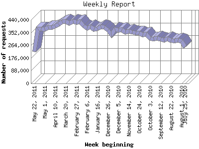

The Weekly Report identifies the activity for each week within the report
time frame. Remember that one page hit can result in several server requests
as the images for each page are loaded.
Note: Depending on the
report time frame for this report the first and last week may not represent
a full seven day week, resulting in lower hits.

| Week beginning | Number of requests | Number of page requests | |
|---|---|---|---|
| 1. | July 25, 2010 | 251,762 | 33,618 |
| 2. | August 1, 2010 | 293,297 | 39,969 |
| 3. | August 8, 2010 | 297,625 | 39,814 |
| 4. | August 15, 2010 | 296,336 | 39,359 |
| 5. | August 22, 2010 | 294,736 | 39,973 |
| 6. | August 29, 2010 | 308,990 | 41,874 |
| 7. | September 5, 2010 | 298,074 | 40,918 |
| 8. | September 12, 2010 | 306,170 | 42,242 |
| 9. | September 19, 2010 | 313,638 | 42,481 |
| 10. | September 26, 2010 | 308,175 | 41,754 |
| 11. | October 3, 2010 | 310,542 | 47,691 |
| 12. | October 10, 2010 | 340,379 | 61,537 |
| 13. | October 17, 2010 | 337,112 | 61,596 |
| 14. | October 24, 2010 | 349,082 | 64,143 |
| 15. | October 31, 2010 | 350,081 | 64,080 |
| 16. | November 7, 2010 | 354,122 | 64,253 |
| 17. | November 14, 2010 | 359,994 | 66,573 |
| 18. | November 21, 2010 | 353,617 | 65,041 |
| 19. | November 28, 2010 | 370,301 | 69,464 |
| 20. | December 5, 2010 | 367,578 | 69,036 |
| 21. | December 12, 2010 | 373,299 | 69,469 |
| 22. | December 19, 2010 | 337,744 | 62,849 |
| 23. | December 26, 2010 | 366,741 | 67,922 |
| 24. | January 2, 2011 | 388,889 | 73,102 |
| 25. | January 9, 2011 | 390,500 | 73,203 |
| 26. | January 16, 2011 | 379,700 | 70,931 |
| 27. | January 23, 2011 | 374,036 | 69,355 |
| 28. | January 30, 2011 | 393,120 | 73,339 |
| 29. | February 6, 2011 | 380,577 | 71,822 |
| 30. | February 13, 2011 | 399,726 | 72,267 |
| 31. | February 20, 2011 | 424,946 | 74,064 |
| 32. | February 27, 2011 | 423,193 | 74,493 |
| 33. | March 6, 2011 | 430,348 | 74,922 |
| 34. | March 13, 2011 | 416,549 | 74,977 |
| 35. | March 20, 2011 | 428,980 | 78,188 |
| 36. | March 27, 2011 | 426,174 | 78,672 |
| 37. | April 3, 2011 | 407,498 | 78,320 |
| 38. | April 10, 2011 | 394,640 | 78,788 |
| 39. | April 17, 2011 | 389,206 | 80,471 |
| 40. | April 24, 2011 | 388,116 | 81,569 |
| 41. | May 1, 2011 | 376,401 | 81,127 |
| 42. | May 8, 2011 | 378,571 | 81,384 |
| 43. | May 15, 2011 | 378,750 | 81,368 |
| 44. | May 22, 2011 | 221,565 | 48,087 |
Most active week beginning April 24, 2011 : 81,569 pages sent. 430,348 requests handled.
Weekly average: 63,775 pages sent. 357,520 requests handled.
This report was generated on May 26, 2011 14:03.
Report time frame July 26, 2010 00:00 to May 26, 2011 00:01.
| Web statistics report produced by: analog 6.0 / Report Magic 2.21 |